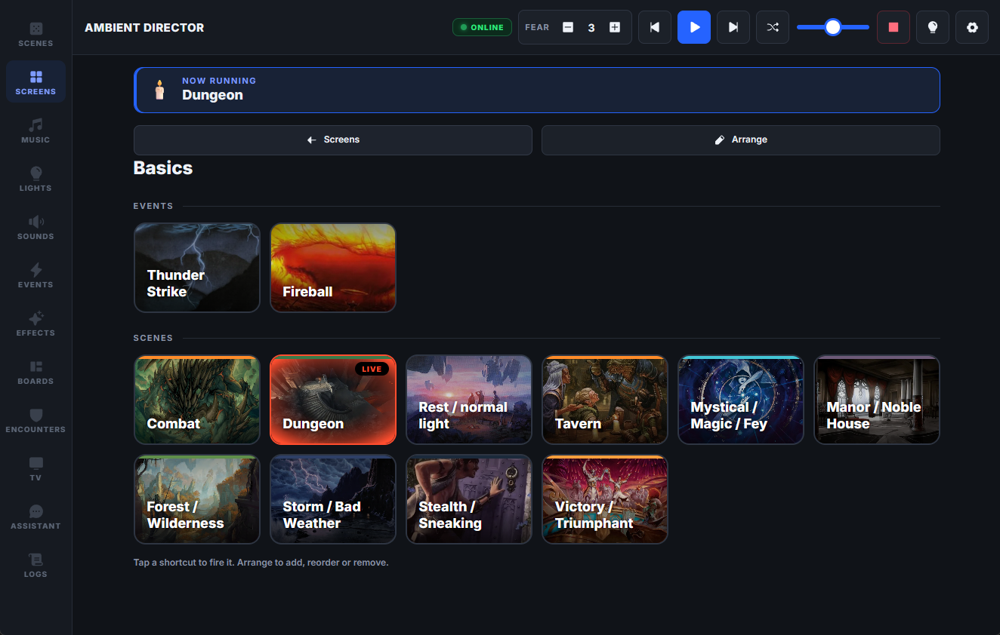
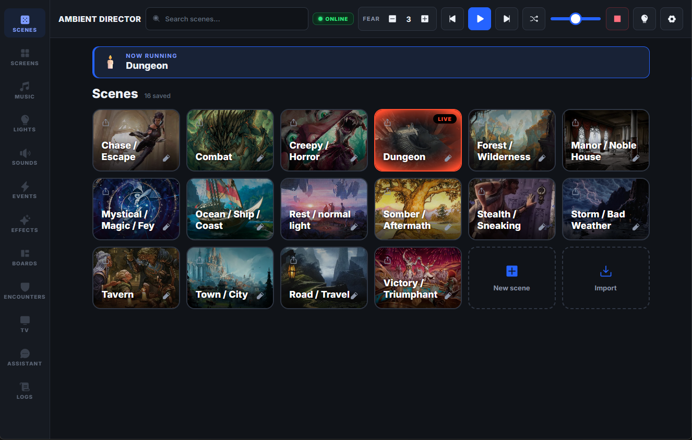
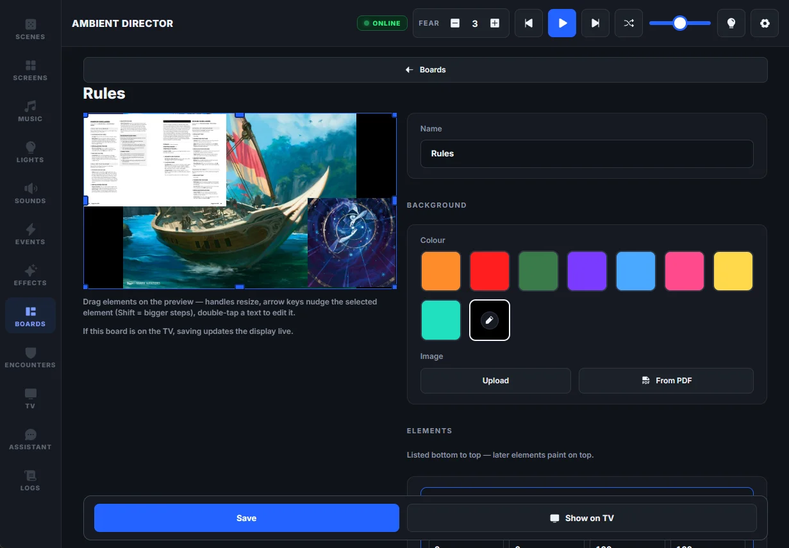
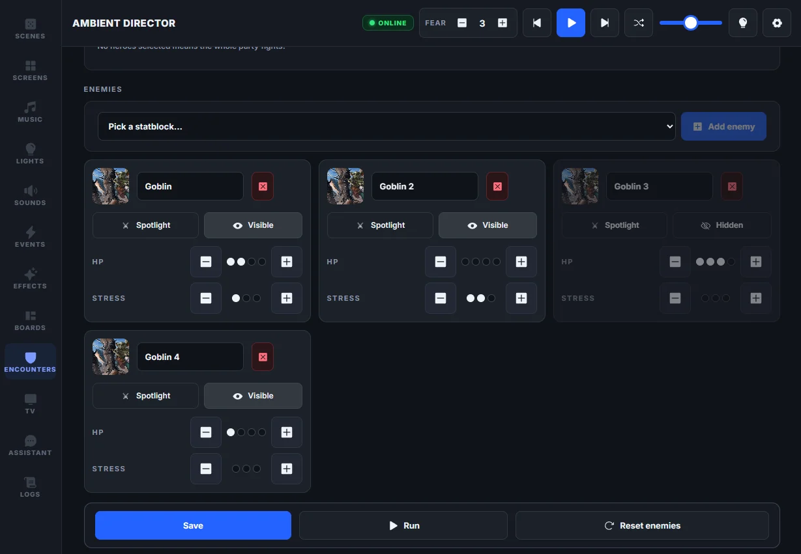

Lights
Philips Hue and Tuya, controlled over your LAN — no cloud at game time. Animated effects when the scene calls for them, smoothest on Hue.

Self-hosted · Local-first · Open source
A free, self-hosted control panel for your RPG room — lights, music, sound effects and a player-facing TV, switched together by scenes you design.
Windows build is one click · Linux & macOS run from source · Spotify optional
Free & MIT · Linux & macOS run from source

LIVE— DUNGEON
Lights · Music · Sound
Philips Hue and Tuya, controlled over your LAN — no cloud at game time. Animated effects when the scene calls for them, smoothest on Hue.
Spotify Connect or your own files, a playlist per scene. The tavern always knows its own songs.

Overlapping one-shots and loops, with Freesound search built in. Thunder on top of whatever’s playing.

10 seconds
Scenes & events
A scene is the whole room — lights, playlist, soundscape, TV — saved as one tile. Events fire stingers on top of whatever’s playing: a lightning flash and a thunderclap, one key.


Events & timelines
An event can be a single stinger — flash, thunderclap, done — or a whole sequence on a video-editor timeline: sound and light clips placed to the millisecond, fired over the live scene from one tap or one Stream Deck key.
The players’ screen
Maps, handouts and live boards — party HP, fear, the enemies they’re facing — on a TV the whole table sees. The screen runs key-free; GM controls stay private on your tablet.


The game layer
A party tracker, a bestiary, prepped encounters. Daggerheart and D&D 5e presets built in — take a hit point from the panel or a Stream Deck key.
Assistant & MCP
A built-in assistant — bring your own key from Anthropic, OpenAI or Google — that can run the whole room: scenes, events, sounds, boards, the party tracker. The same tools speak MCP, so Claude Code or Claude Desktop can drive it too, or prep next session’s boards with you. Setup and secrets stay off-limits.
AssistantBYOK · Claude / GPT / Gemini
Storm’s rolling in — make the table feel it.
activate_scene · stormtrigger_event · thunderstormset_music_volume · 40
Done — lights are a cold blue, rain sits under the music, and the thunder event is ready to fire.
Works with your gear
over your LAN
local control
optional · Premium when used
every command is a plain URL — no plugin
the panel is a web page
sound search built in
plus a bring-your-own-key assistant — Anthropic, OpenAI or Gemini
Setup
01
The Windows build is one click. No installer, no account.
Honest noteIt’s an unsigned open-source build, so SmartScreen will ask — “More info → Run anyway”.
02
A first-run wizard connects your lights and music. Every step is skippable — add gear whenever.
03
Open the panel on your iPad, set the room the way the story needs it, tap save.
dotnet runLinux & macOS run from source with the .NET 10 SDK —
every feature is cross-platform.